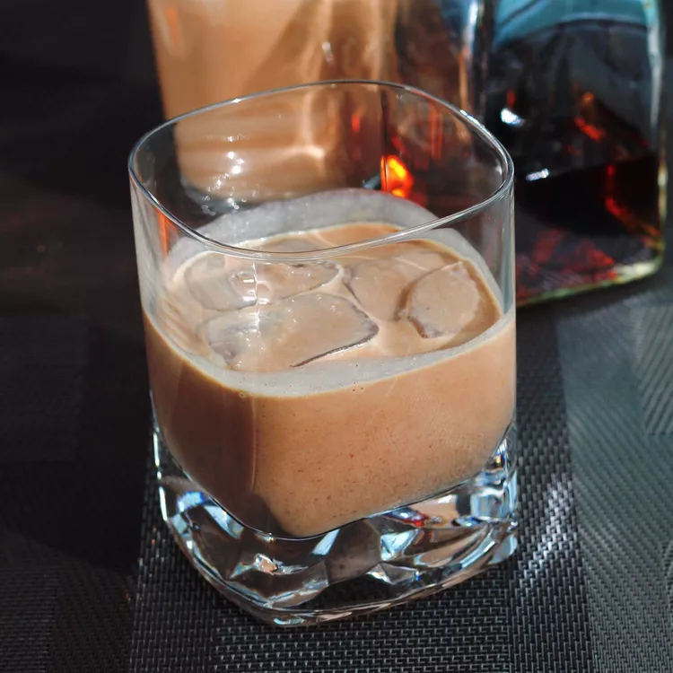

Coconut Rum Cream Recipe

Description
We loved drinking a little coconut rum cream in our morning coffee on vacation in Jamaica but could never find it when we returned home.
After looking up several recipes, I decided to make some adjustments and came up with my own version.
Add a little to your coffee or serve over ice as a cocktail.
Ingredients
- 1 cup heavy whipping cream
- 1(2.6 ounce) bar milk chocolate candy bar, chopped
- 1 (14 ounce) can sweetened condensed milk
- 1 cup dark rum
- 4 teaspoons instant coffee granule
- ½ teaspoon ground cinnamon
- ½ teaspoon vanilla extract
- ½ teaspoon coconut extract
Steps
- Heat cream and chocolate in the top of a double boiler over simmering water,
stirring frequently and scraping down the sides with a rubber spatula until chocolate is melted;
remove from heat and cool.
- Blend together cooled chocolate mixture,
condensed milk, rum, coffee granules, cinnamon, vanilla,
and coconut extract in a blender on high speed until smooth.